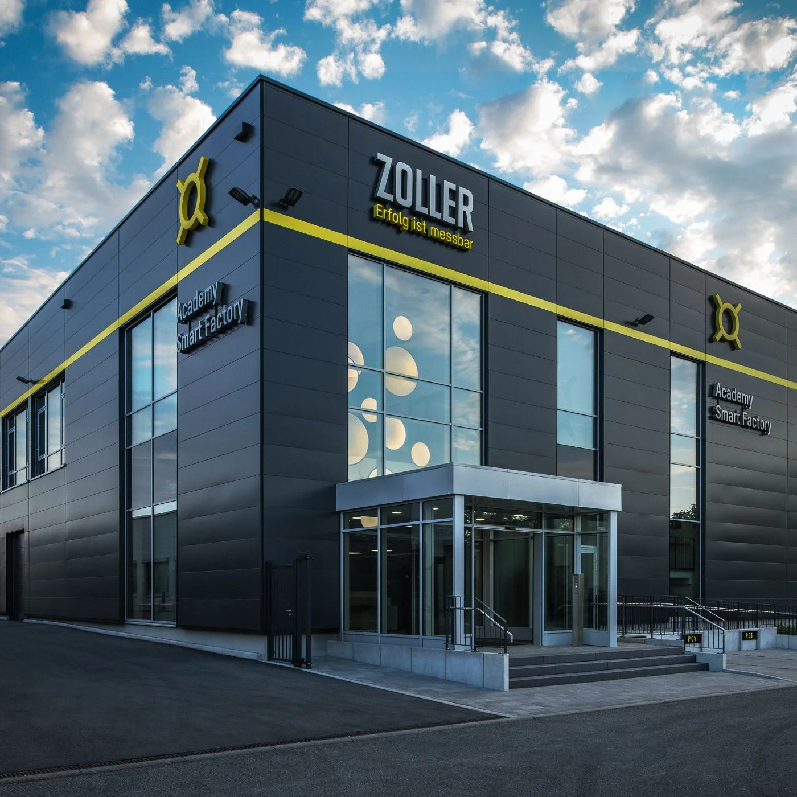
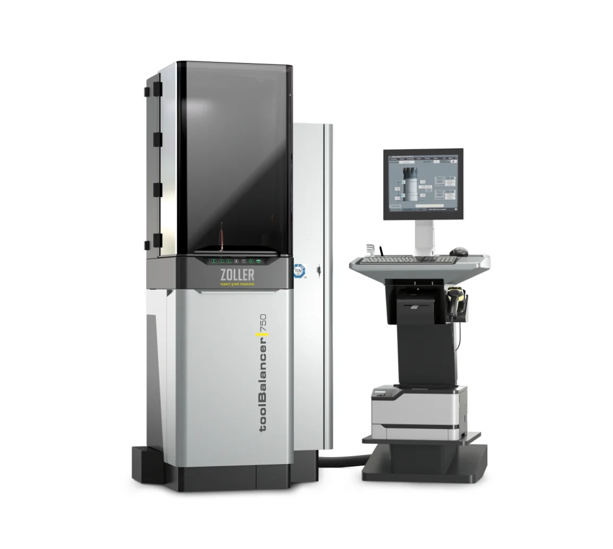
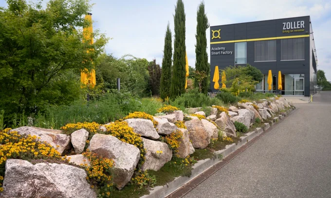

Uniquement de l'électricité issue de sources renouvelables
Nous utilisons exclusivement de l'électricité issue d'énergies renouvelables. Notre installation photovoltaïque interne nous permet d'y contribuer.
Lire la suite
Améliorez l'efficacité de vos processus d'usinage grâce aux solutions du leader technologique : ZOLLER.
Améliorez l'efficacité de vos processus d'usinage.
Grâce aux solutions du leader technologique : ZOLLER.
Découvrir le système
ZOLLER propose une fonction d'IA fiable permettant d'évaluer la durée de vie des outils. L'objectif est d'utiliser efficacement les outils jusqu'à la limite d'usure techniquement raisonnable, grâce à une analyse automatisée des données réelles relatives aux outils.
Sur cette base, il est possible de prendre des décisions claires quant à la poursuite de leur utilisation. Cela permet d’éviter les arrêts imprévus des machines dus à une défaillance des outils.
Les gains d'efficacité apportés par ZOLLER dans les processus d'usinage sont considérables. C'est pourquoi chaque investissement est rapidement amorti. Même sur une seule machine CNC, les solutions de ZOLLER permettent de réduire les délais, les coûts et les temps d'arrêt.

Chez ZOLLER, la qualité « premium » est une promesse,
pas un privilège.
Des bénéfices plus élevés, davantage de commandes, un gain de temps, des coûts de fabrication réduits : ZOLLER améliore l'efficacité de ses clients dans le monde entier.
Grâce à »l'hyperion« de ZOLLER, SycoTec réduit d'autant ses temps de préparation. Cet appareil horizontal de réglage et de mesure permet de contrôler des outils de tournage et des porte-outils multiples. SycoTec utilise ainsi ces outils pour fabriquer des micromoteurs à grande vitesse.
C'est l'ampleur de la réduction potentielle des coûts de main-d'œuvre liés à l'inspection des outils en trois équipes, si vous utilisez la solution d'automatisation »roboSet 2«.
C'est le temps moyen nécessaire pour amortir un appareil de réglage et de mesure »smile«. Hypothèse : production en une seule équipe avec une machine CNC. Avec deux machines, ce délai est divisé par deux.
L'entreprise familiale ProCam, située dans le Michigan (États-Unis), a augmenté son chiffre d'affaires d'un million de dollars en l'espace de deux ans après l'achat d'une »smile 420«. Grâce à des temps de préparation réduits et à une diminution des temps d'arrêt des machines, ProCam a pu traiter davantage de commandes.
Faites défiler – la caméra survole tous les univers de la salle d’exposition 3D.
Réduisez les temps de réglage de 40 % et plus.
12 produits
Relier les processus, garantir la qualité et produire plus vite.
20 produits
Documentez la qualité et créez des jumeaux numériques.
15 produits
Automatisation flexible et modulaire pour les outils de coupe.
8 produits
Frettage et défrettage des outils en un temps record.
2 produits
Porte-outils avec »idChip« : l’interface idéale pour votre production numérique.
1 produit
Préserver les broches, garantir la qualité : avec les meilleures équilibreuses du marché.
1 produit
Cliquez sur un appareil, lisez les détails et parcourez tous les univers en mode visite.

Augmentation de la productivité grâce aux appareils de réglage et de mesure ZOLLER
Le calculateur de rentabilité ZOLLER évalue le potentiel d'économies de votre entreprise.

Michael Mauth, directeur général de Mauth Werkzeug-Schleiftechnik à OberndorfL'automatisation est indispensable pour rester compétitif à l'échelle internationale. »
Frank Schaefer, ingénieur diplômé, membre de la direction de la société LIDU Maschinenbau Lienenbrügger GmbH à DülmenLa numérisation grâce aux systèmes logiciels de ZOLLER a contribué de manière décisive à rendre la production nettement plus rentable. »

Au sein de la ZOLLER Smart Factory de Pleidelsheim, nous vous présentons le système ZOLLER avec l'ensemble de ses solutions, jusqu'à l'automatisation complète de l'atelier. Venez constater par vous-même la grande efficacité des processus CAM-to-Part »sans faille et les avantages offerts par la disponibilité continue des données d'outils. «
Découvrez dès maintenant comment prendre rendez-vous pour une visite ou un entretien individuel avec un »expert«.

»toolBalancer« de ZOLLER est à la pointe de la technologie mondiale en matière d'équilibrage d'outils. Il permet d'obtenir des résultats d'équilibrage < 0,4 gmm tout en offrant une ergonomie optimale et une utilisation simple. Tous »les toolBalancer« sont contrôlés par TÜV et UL/CSA.
< 0,4 gmm de qualité d’équilibrage
Nous utilisons exclusivement de l'électricité issue d'énergies renouvelables. Notre installation photovoltaïque interne nous permet d'y contribuer.
Lire la suite
Un lieu de bien-être épanouissant au sein de l'entreprise ZOLLER
Lire la suite
Grâce à ZOLLER, les ateliers de production exploitent de manière optimale leurs machines, leurs ressources matérielles et leurs outils. Cela permet de réduire les pièces manquantes et d'améliorer l'efficacité.
Lire la suite